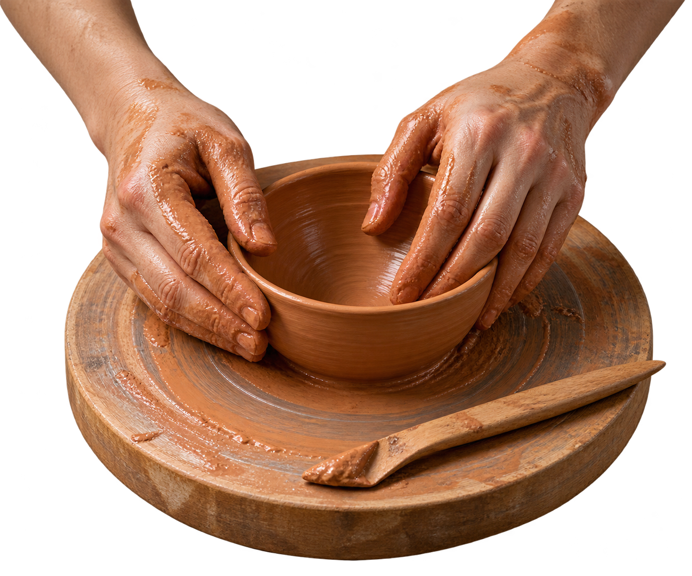

看见。认识泥土与工具
先认识材料，
再决定你想把它变成什么。
DAY 1 / 10:00从手的感觉开始
学习揉泥，感受泥土的湿度与可塑性，用手捏和泥条练习建立第一份材料经验。
- 适合谁
- 18 岁以上 / 零基础
- 工具
- 工坊提供基础工具
从一团泥，到第一件属于你的器物。
零基础，也能从这里开始。

WEEKEND先认识材料，
再决定你想把它变成什么。
学习揉泥，感受泥土的湿度与可塑性，用手捏和泥条练习建立第一份材料经验。
不追求一个标准答案，
先让一个想法真正站起来。
从简单草图出发，学习器型、壁厚与把手连接，完成一件可继续修整的泥坯。
根据泥坯状态修整轮廓，处理边缘与部件，让作品形成自己的细节。
火会完成剩下的事。
你只需记住自己动手的这两天。
完成作品记录和装饰，了解烧制流程。实际烧制周期、取件方式与成品使用条件需由真实工坊另行确认。
周六、日 10:00–16:00 · 开物概念空间
演示退改：开课前 7 天可退；7 天内可转让名额。
虚构工作坊，无真实报名与付款。